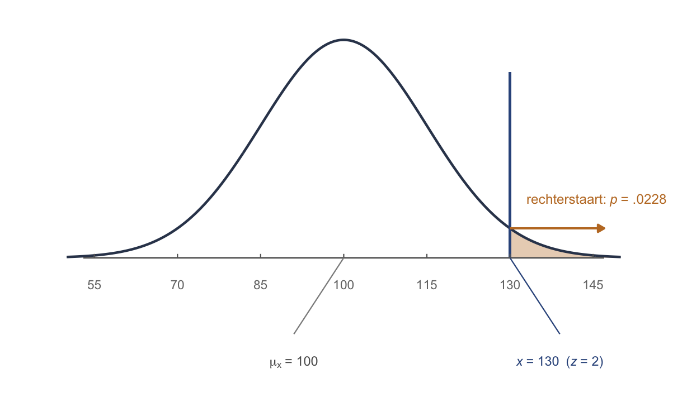

Thema 3 · Normaalverdeling & z-scores
Deel 2 — Standaardiseren · ruw is ruk, het lineaaltje
Ruw is ruk
Een egel scoort 130 op pienterheid. Is dat veel? Je hebt geen idee. Honderddertig wát? Een ruwe score op zichzelf zegt niks — je weet niet waar het midden ligt, niet hoe uitgesmeerd de groep is, niet of 130 zeldzaam is of doodgewoon.
Daarom: ruw is ruk. We willen een score die zichzelf uitlegt. Dat is een z-score.
Het marsmannetje
Stel je praat met een marsmannetje. Het kent de aarde niet, maar rekenen kan het wel. Je zegt: “mijn pienterheid is 130.” Daar heeft het niks aan — 130 betekent niks op Mars.
Wat heeft het marsmannetje wél nodig? Precies twee dingen:
- “Het is normaal verdeeld” — dan ziet het de bekende belcurve voor zich.
- “Ik zit 2 standaardafwijkingen rechts van het midden.”
Meer niet. Niet de 130, niet de 100, niet de 15 — die zijn allemaal ruk. Het enige dat telt is hoeveel standaardafwijkingen je van het midden zit. En dát getal is de z-score.
z = het aantal lineaaltjes
Denk aan de standaardafwijking als een lineaaltje van 15 punten. De z-score is simpelweg: hoe vaak past dat lineaaltje tussen het midden en jouw score?
\[z = \frac{x - \mu_x}{\sigma_x} = \frac{\text{specifiek} - \text{algemeen}}{\text{lineaaltje}}\]
Voor onze egel van 130: \(z = \dfrac{130 - 100}{15} = 2\). Twee lineaaltjes naar rechts. Twee wát? Twee koeien, twee moeders? Nee — twee standaardafwijkingen. Zet er altijd de tel-eenheid bij.
De normaalverdeling
Waar komt die belcurve vandaan? Denk aan een houten plank vol spijkers, rechtop gezet. Je laat boven in het midden een knikker vallen: tik-tik-tik stuitert hij tussen de spijkers naar beneden. Meestal landt hij rond het midden, soms wat extremer. Doe dat met duizend knikkers en je krijgt vanzelf die gladde bel.
Notatie: \(x \sim N(\mu, \sigma)\) — het krulletje betekent “gedraagt zich als”, de \(N\) staat voor normaal. Onze egels: pienterheid \(\sim N(100, 15)\) — lees dit als: normaal verdeeld met gemiddelde 100 en standaardafwijking 15.
De z-tabel
De z-tabel (Tabel A, de standaardnormaal) vertaalt een z-score naar een kans. Twee regels die je leven redden:
- Regel 1: téken eerst. Schets de bel, zet je z erin, arceer het stuk dat je zoekt. Kijk: heb je een twee- of een driedeling nodig? Welke staart?
- De tabel geeft altijd de linkerkant (de kans op “of lager”). Wil je de rechterstaart, doe dan 1 min de tabelwaarde — of zoek de negatieve z op, want door de symmetrie is dat hetzelfde.
De tabel verkeerd aflezen is zelden het probleem; het verkeerde gebied arceren wél. Daarom: eerst tekenen, dán pas opzoeken.
De richtings-engine: x ⇄ z ⇄ p
Bijna alles wat hierna komt — z-scores, betrouwbaarheidsintervallen, toetsen, power — is dezelfde wandeling, twee kanten op. Eén ketting:
\[\text{gebeurtenis } x \;\rightleftarrows\; \text{aantal lineaaltjes } z \;\rightleftarrows\; \text{kans } p\]
- \(x \to z\): “hoe ver van het midden, in lineaaltjes?” → \(z = \dfrac{x - \mu_x}{\sigma_x}\).
- \(z \to x\): “loop \(z\) lineaaltjes vanaf het midden” → \(x = \mu_x + z \cdot \sigma_x\).
- \(z \rightleftarrows p\): de z-tabel, heen of terug.
De gegeven bepaalt de richting. Krijg je een score en zoek je een kans? Dan ga je \(x \to z \to p\). Krijg je een kans (of percentage) en zoek je een score? Dan \(p \to z \to x\). Lees dus eerst: wat is gegeven, en wat moet ik hebben?
Twee soorten vragen
Gewoon: \(x \to z \to p\) (score gegeven, kans gezocht)
Welk deel van de egels is pienterder dan 130?
- \(z = \dfrac{130 - 100}{15} = 2{,}00\) (twee lineaaltjes rechts).
- Tabel A bij \(z = 2{,}00\): linkerkant \(= .9772\).
- We willen de rechterstaart: \(1 - .9772 = .0228\).
Dus 2,28% van de egels is pienterder dan 130. (Teken het: een klein staartje rechts — klein staartje = extreem.)
| \(i\) | egel | \(x_i\) | \(z_i = \dfrac{x_i-100}{15}\) | rechterstaart |
|---|---|---|---|---|
| 1 | A | 130 | +2,00 | .023 |
| 2 | B | 92,5 | −0,50 | .691 |
| 3 | C | 115 | +1,00 | .159 |
Invers: \(p \to z \to x\) (kans gegeven, score gezocht)
Boven welke pienterheid zitten de 10% slimste egels?
- 10% boven → 90% eronder → in de tabel hoort daar \(z \approx 1{,}28\) bij.
- Loop terug: \(x = \mu_x + z\cdot\sigma_x = 100 + 1{,}28 \cdot 15 = 119{,}2\).
Dus vanaf zo’n 119 behoor je tot de slimste 10%. Zelfde fietsje, andere kant op.
Oefenen
Wat blijft liggen
Tot nu toe standaardiseren we de score van één individu — het lineaaltje is dan \(\sigma_x\). Straks (Deel 4) kijken we niet naar één egel maar naar een heel steekproefgemiddelde; dan wordt het lineaaltje de standaardfout \(\sigma_{\bar{x}} = \sigma_x/\sqrt{n}\). De wandeling x ⇄ z ⇄ p blijft exact hetzelfde — alleen het lineaaltje verandert.
Tot slot
Een ruwe score is ruk; een z-score legt zichzelf uit. Onthoud het lineaaltje en het fietsje — want vanaf hier is élke toets, élk interval en straks de power niets anders dan deze ene wandeling, twee kanten op.
Werkboek OZP 1 · Thema 3, versie 0.1 (handrekenen & theorie; SPSS later). Doorlopend voorbeeld: de egels.